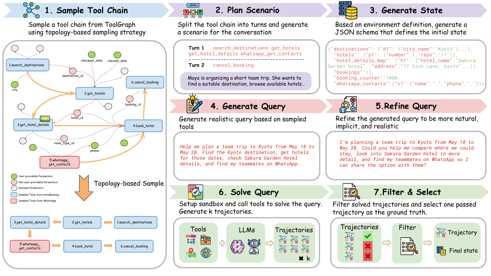
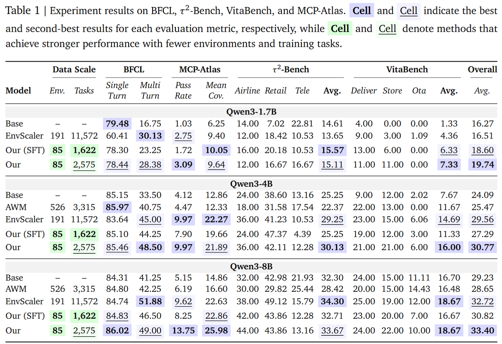
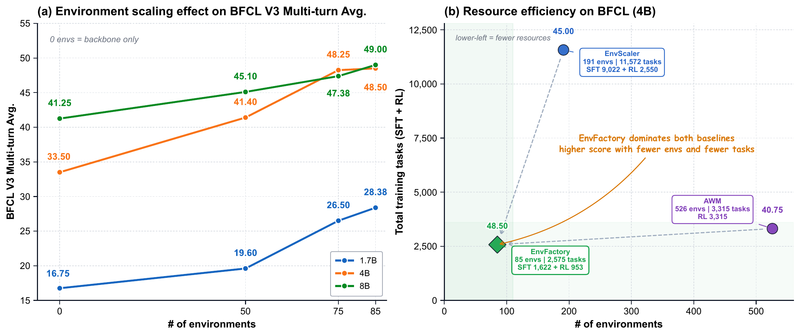
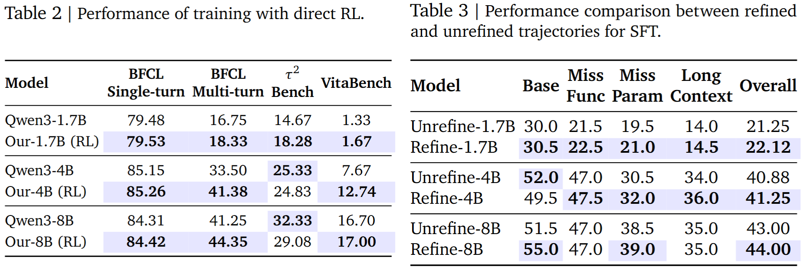

Executable environment synthesis
EnvFactory proposes diverse tool-use scenarios, mines authentic online resources, and constructs stateful databases plus executable tool interfaces with iterative validation and revision.
Equipping LLMs with tool-use capabilities via Agentic Reinforcement Learning (Agentic RL) is bottlenecked by two challenges: the lack of scalable, robust execution environments and the scarcity of realistic training data that captures implicit human reasoning. Existing approaches depend on costly real-world APIs, hallucination-prone LLM simulators, or synthetic environments that are often single-turn or depend on pre-collected documents. Moreover, synthetic trajectories are frequently over-specified, resembling instruction sequences rather than natural human intents, reducing their effectiveness for RL training. We introduce EnvFactory, a fully automated framework that addresses both challenges. EnvFactory autonomously explores and verifies stateful, executable tool environments from authentic resources, and synthesizes natural multi-turn trajectories through topology-aware sampling and calibrated refinement, producing grounded queries with implicit intents.
With only 85 verified environments across 7 domains, EnvFactory generates 2,575 SFT and RL trajectories and improves Qwen3-series models by up to 15% on BFCLv3, 8.6% on MCP-Atlas, and 6% on conversational benchmarks including τ²-Bench and VitaBench.
EnvFactory proposes diverse tool-use scenarios, mines authentic online resources, and constructs stateful databases plus executable tool interfaces with iterative validation and revision.
Tool dependencies are represented as graphs, then sampled recursively so generated tasks preserve coherent logical structure instead of becoming flat instruction lists.
SFT provides a strong cold start from synthesized user interactions, while RL further optimizes long-horizon tool execution through verified rewards.

EnvFactory delivers strong gains despite using only 85 verified environments and 2,575 trajectories. SFT on the synthesized data already provides a strong cold start across tool-use benchmarks, while RL on top of SFT further improves performance on challenging interactive settings. The gains carry over to both conversational and non-conversational benchmarks, showing consistent generalization across BFCL-v3, τ²-Bench, VitaBench, and MCP-Atlas.

Increasing the executable environment pool from 50 to 75 and 85 environments consistently improves BFCL-v3 multi-turn performance across Qwen3-1.7B, Qwen3-4B, and Qwen3-8B. Broader coverage exposes models to more diverse tool schemas, state transitions, and multi-step interaction patterns, improving generalization to unseen tool-use tasks.
The scaling curve shows diminishing returns, but the gain from 75 to 85 environments remains positive. EnvFactory also achieves stronger BFCL-v3 performance with only 85 environments and 2,575 training tasks, suggesting that verified stateful environments and dependency-aware trajectories can provide effective supervision and reward signals from a compact training set.

The ablation results cover direct RL, the refinement stage, and the reward weighting coefficient. They show that SFT initialization remains important for stable policy optimization, refinement improves ambiguity calibration, and balanced reward weighting performs best on BFCL-v3.

@misc{xu2026envfactoryscalingtooluseagents,
title={EnvFactory: Scaling Tool-Use Agents via Executable Environments Synthesis and Robust RL},
author={Minrui Xu and Zilin Wang and Mengyi DENG and Zhiwei Li and Zhicheng Yang and Xiao Zhu and Yinhong Liu and Boyu Zhu and Baiyu Huang and Chao Chen and Heyuan Deng and Fei Mi and Lifeng Shang and Xingshan Zeng and Zhijiang Guo},
year={2026},
eprint={2605.18703},
archivePrefix={arXiv},
primaryClass={cs.CL},
url={https://arxiv.org/abs/2605.18703},
}